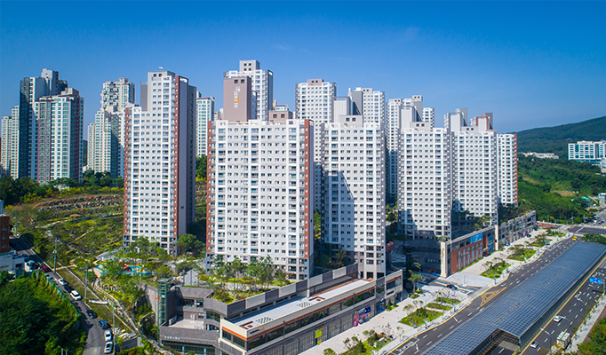

두산건설은 ‘용인시 동백동 지역주택조합아파트 신축사업’을 수주했다고 밝혔다.
이 프로젝트는 용인시 기흥구 동백동 478번지 일대에 지하3층~지상22층 아파트 7개동 378세대 및 부대복리시설을 건립하는 사업이다.
실수요자들의 선호도가 높은 전용면적 61~84㎡(25~34평형) 타입으로 시공될 용인시 동백동 사업은 맞은편에 이마트 및 중심상권, 동백호수공원이 위치하고,
사업지 앞에 광역버스정류장, 도보 9분거리에 어정역(용인경전철)이 위치해 뛰어난 입지를 갖추고 있다. 뿐만 아니라 용인서울고속도로, 분당수서간도로,
내곡도로 등이 인접해 서울 강남으로의 접근성도 용이하다.
용인시 동백동 지역주택조합사업은 2022년 5월 착공 예정이며, 준공은 32개월 후인 2025년 1월 예정이다.
▣ 공사개요
- 위 치 : 용인시 기흥구 동백동 478-10번지 일원
- 규 모 : 지하3층~지상22층, 아파트 7개동 378세대 및 부대복리시설
- 공사금액 : 851억 원
- 대지면적 : 16,268㎡ (4,921평)
- 연면적 : 65,599㎡ (19,843평)
- 공사기간: 2022년 5월~2025년 1월